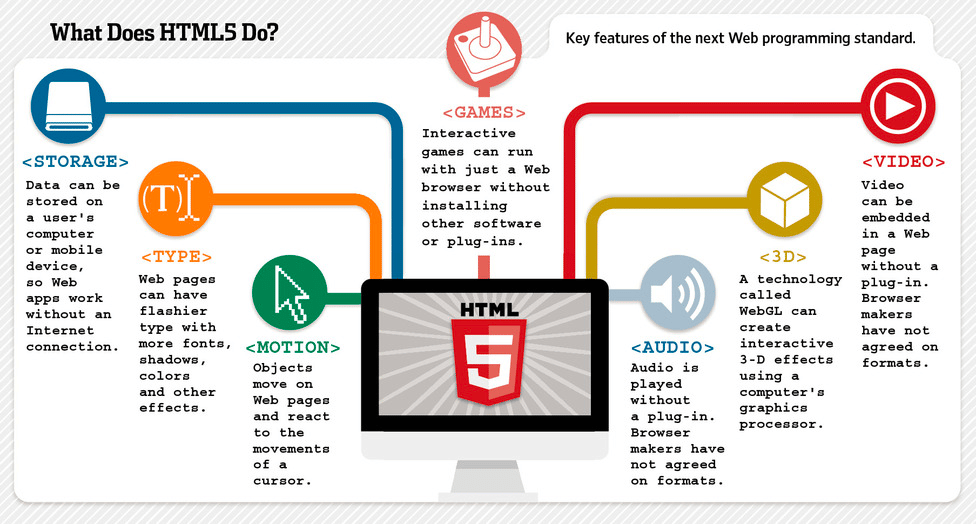

Novas ferramentas ajudam a organizar projetos digitais
Categoria: Tecnologia | Autor: Thaniel Jorge | Data: 23/10/2026
As ferramentas digitais podem ajudar equipas a planear tarefas, acompanhar prazos e documentar o trabalho.
Um jornal académico sobre tecnologia e programação
Categoria: Tecnologia | Autor: Thaniel Jorge | Data: 23/10/2026
As ferramentas digitais podem ajudar equipas a planear tarefas, acompanhar prazos e documentar o trabalho.
Categoria: Programação | Autor: Thaniel Jorge | Data: 23/10/2026

Aprender elementos, atributos e semântica ajuda a construir páginas bem estruturadas.
Categoria: Inteligência Artificial | Autor: Thaniel Jorge | Data: 23/10/2026

Algumas ferramentas de IA ajudam a explicar conceitos, mas os resultados devem ser avaliados com espírito crítico.
Categoria: Segurança | Autor: Thaniel Jorge | Data: 23/10/2026
Palavras-passe fortes, autenticação multifator e atenção a mensagens suspeitas reduzem riscos comuns.
Categoria: Tecnologia | Autor: Thaniel Jorge | Data: 23/10/2026
Pequenos projetos permitem praticar planeamento, programação, testes e trabalho em equipa.